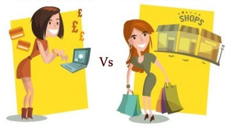

Online shopping offers certain benefits and advantages, but it will never replace the experience of shopping in a retail store. A customer who knows exactly what he or she wants can look it up online, read and compare the information, and purchase from the site that offers the best price or service. A shopper who is uncertain what to look for, or who just enjoys browsing through items on display, will prefer a retail store where the merchandise can be seen, handled and sampled. The décor, music and arrangement of goods in a retail store creates a multi-dimensional shopping environment that cannot be duplicated online.

For many people, going shopping at a mall, department store or market is a form of entertainment and a social experience. Many people who are currently unfamiliar with computers and do not feel comfortable using the Internet to shop are not likely to change their habits. Forrester Research expects U.S. online sales to comprise just 9 percent of overall U.S. retail sales in 2011. Online stores must describe products for sale with text, photos, and multimedia files, while in a retail store, the actual product and the manufacturer's packaging are available for direct inspection which might involve a test drive, fitting, or other experimentation. In a conventional retail store, clerks are typically available to answer questions. Some items, like clothing and shoes, may need to be tried on before the customer can be certain that they are the right size. Online shopping sites offer size charts, diagrams and multi-sided views to help the customer make a selection. Most offer generous return policies to encourage customers to place an order. Research by IMRG Capgemini in 2008 showed that one in five online shoppers in the U.K. purchased an item in multiple sizes, with intention of sending the wrong sizes back.
You might also see:-
Advantages of Online Shopping:
Disadvantages of Online Shopping: